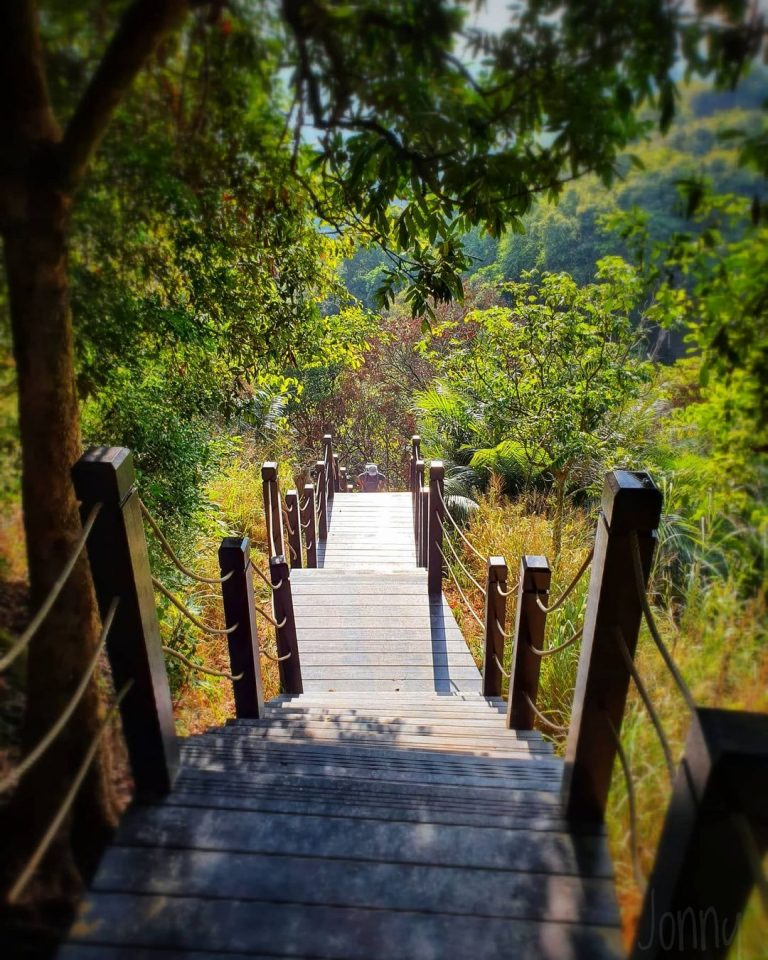
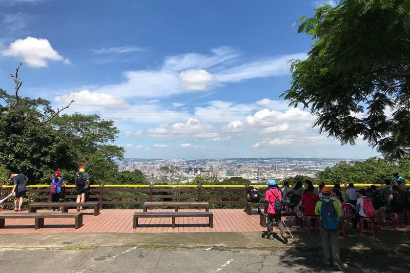
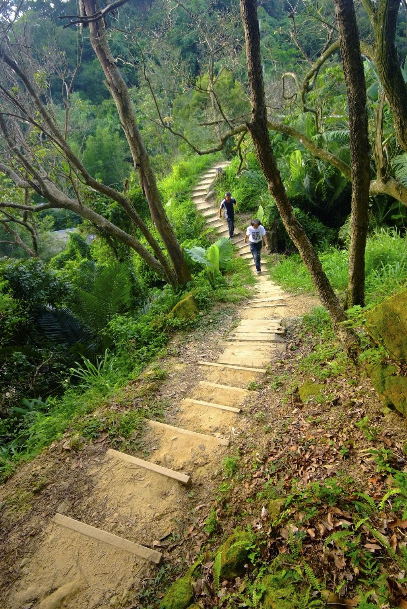
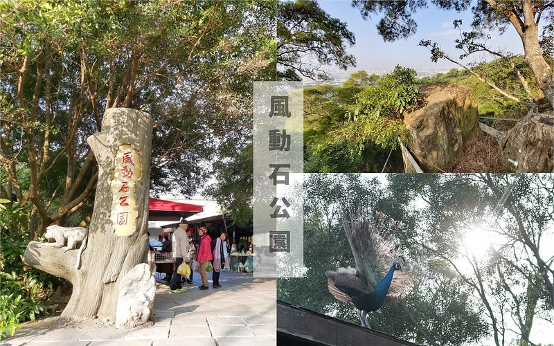
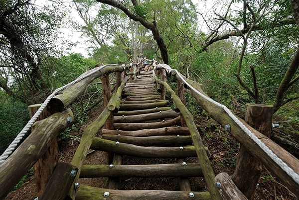
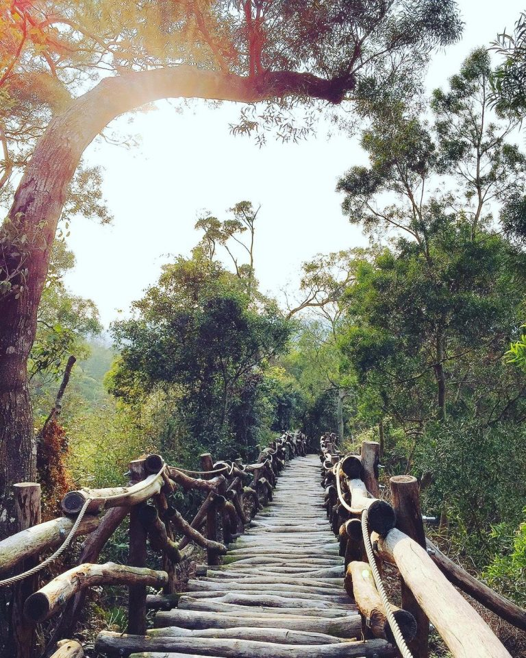
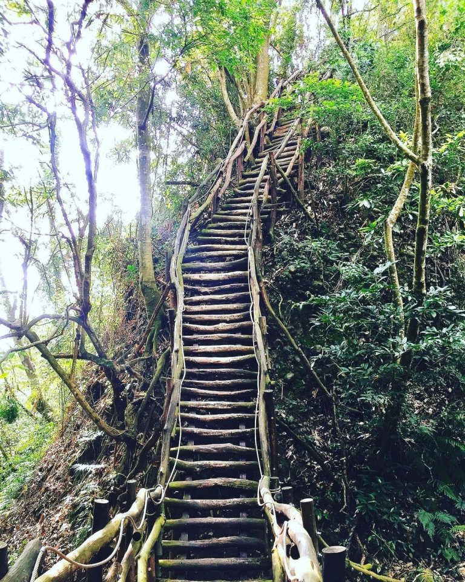

登山入口處：台中市北屯區經補路一段383巷

跟9號、9-1號相同起點終點的10號步道，也是大坑步道群裡相對新建成的步道，全長大約有1.2公里。比起最簡單的9號步道，10號步道的階梯比較陡峭，每階階梯的高度也比9-1號步道的間隔大，沒有登山習慣的朋友初次挑戰可能要評估一下腿力。最終跟9號步道一樣可通往與6號步道連接的寧靜海觀音亭，選擇9～10號步道的遊客大多會在這裡休息，除了有免費茶水，周末早上還有靠山友志工熱捐提供的免費素食早餐，因為不提供任何餐具，希望享用的朋友要記得自帶碗筷喔!

登山入口處：由松竹路一段公墓間的建成巷進入，沿途順指示牌經由6號停車場進入登山口

6號步道也算是休閒等級步道，全長大約1.5公里。途中會經過走9號10號步道大部分人設定為終點的寧靜海觀音亭，稍作休息後6號步道還要繼續前進!比起前段比較清幽的路程，後段除了木造階梯外還有一些路段保留比較原始的山路，不同路段的步道鋪設完善程度落差比較大，走起來比較考驗腳力也要更加小心。6號步道最有特色的就是步道半途上沿著峭壁設置的繩索小吊橋，雖然只有短短幾公尺，但也增加了一些像是遊樂設施般的樂趣。步道最終則會接到6號、7號、8號步道連通的終點風動石公園。

登山入口處：由松竹路一段公墓間的建成巷進入，沿途順指示牌即可到達(登山口未設置停車場及廁所)
全長只有大約950公尺的8號步道，因為步道入口沒有停車場或廁所，所以選擇這條步道上山的朋友比較少一些，相對也比較清幽。步道前段多為平緩產業道路，後段坡度比較陡峭，設有一般木棧階梯跟圓形枕木步道。對於自身腳力體力沒有自信可以挑戰1號～5號步道，但又想要拍大坑步道特色圓形枕木步道的話，就來8號步道吧！雖然8號步道屬於低難度步道，但後段坡度較陡以及圓形枕木步道還是相對的崎嶇比較難踩穩，帶年長者跟小朋友同行的話可要斟酌一下喔！

登山入口處：沿東山路往中興嶺方向直走，經東山樂園至雙連橋右轉上山即可到達。Google搜尋可找「大坑一號步道停車場」

東側頭嵙山大坑步道群裡最北邊的1號步道，全長大約1.6公里，在難度偏高的1～5號步道裡面算是相對簡單可以選擇當入門的一條步道。步道沿途穿越原始的樹林，多種蕨類植披讓樹林步道彷彿熱帶雨林一般的風景。大部分步道是大坑步道著名的相思木圓木棧道，在1～5號步道內1號步道的相思木枕木步道算是相對好走的。

後段的圓木間距較大，還會遇上一段幾乎90度的坡度，記得要抓好扶手上設置的繩子慢慢來，雖然強度比較高需要耗費多一點體力，但整體還不算太困難。需要一點挑戰性又不想太難，或是帶著體力足夠也有登山經驗的小朋友的話，1號步道會是很適合的選擇。步道前段還有一些原木搭建的遊樂設施，就算不爬到後段需要多一點體能的部份，只走前段也很適合帶小朋友來放電消耗體力！